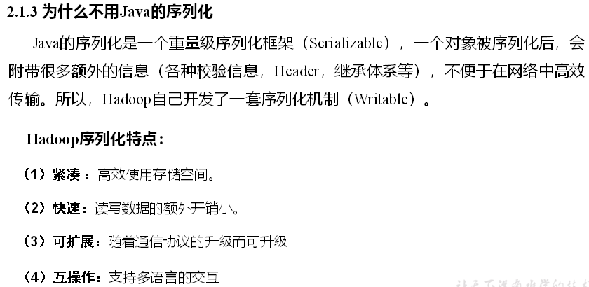
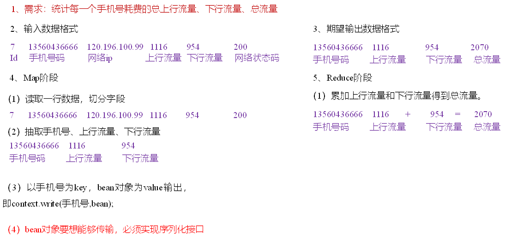

MapReduce
Hadoop序列化
序列化概述


内存中对象有：数组、集合等
自定义bean对象实现序列化接口（Writable）
在企业开发中往往常用的基本序列化类型不能满足所有需求，比如在Hadoop框架内部传递一个bean对象，那么该对象就需要实现序列化接口。
具体实现bean对象序列化步骤如下7步。
（1）必须实现Writable接口
（2）反序列化时，需要反射调用空参构造函数，所以必须有空参构造
public FlowBean() {
super();
}（3）重写序列化方法
@Override
public void write(DataOutput out) throws IOException {
out.writeLong(upFlow);
out.writeLong(downFlow);
out.writeLong(sumFlow);
}（4）重写反序列化方法
@Override
public void readFields(DataInput in) throws IOException {
upFlow = in.readLong();
downFlow = in.readLong();
sumFlow = in.readLong();
}（5）注意反序列化的顺序和序列化的顺序完全一致（序列化先操作的upFlow，则反序列化应该也是先操作upFlow,其他同理）
比如说两个服务器A，B，要从A服务器将其传递到B。这就相当于是一个队列，A中序列化顺序为upFlow->downFlow->sumFlow，则在B中反序列化存储时，就应该先进先出来操作。
（6）要想把结果显示在文件中，需要重写toString()，可用”\t”分开，方便后续用。
（7）如果需要将自定义的bean放在key中传输，则还需要实现Comparable接口，因为MapReduce框中的Shuffle过程要求对key必须能排序。详见后面排序案例。
@Override
public int compareTo(FlowBean o) {
// 倒序排列，从大到小
return this.sumFlow > o.getSumFlow() ? -1 : 1;
}序列化案例实操
- 需求
统计每一个手机号耗费的总上行流量、下行流量、总流量
（1）输入数据（文件内容）
1 13736230513 192.196.100.1 www.baidu.com 2481 24681 200
2 13846544121 192.196.100.2 264 0 200
3 13956435636 192.196.100.3 132 1512 200
4 13966251146 192.168.100.1 240 0 404
5 18271575951 192.168.100.2 www.bilibili.com 1527 2106 200
6 84188413 192.168.100.3 www.baidu.com 4116 1432 200
7 13590439668 192.168.100.4 1116 954 200
8 15910133277 192.168.100.5 www.hao123.com 3156 2936 200
9 13729199489 192.168.100.6 240 0 200
10 13630577991 192.168.100.7 www.shouhu.com 6960 690 200
11 15043685818 192.168.100.8 www.baidu.com 3659 3538 200
12 15959002129 192.168.100.9 www.baidu.com 1938 180 500
13 13560439638 192.168.100.10 918 4938 200
14 13470253144 192.168.100.11 180 180 200
15 13682846555 192.168.100.12 www.qq.com 1938 2910 200
16 13992314666 192.168.100.13 www.gaga.com 3008 3720 200
17 13509468723 192.168.100.14 www.sogou.com 7335 110349 404
18 18390173782 192.168.100.15 www.sogou.com 9531 2412 200
19 13975057813 192.168.100.16 www.baidu.com 11058 48243 200
20 13768778790 192.168.100.17 120 120 200
21 13568436656 192.168.100.18 www.alibaba.com 2481 24681 200
22 13568436656 192.168.100.19 1116 954 200（2）输入数据格式：
| id | 手机号码 | 网络ip | 上行流量 | 下行流量 | 网络状态码 |
|---|---|---|---|---|---|
| 7 | 13560436666 | 120.196.100.99 | 1116 | 954 | 200 |
（3）期望输出数据格式
| 手机号码 | 上行流量 | 下行流量 | 总流量 |
|---|---|---|---|
| 13560436666 | 1116 | 954 | 2070 |
- 需求分析

- 编写MapReduce程序
（1）编写流量统计的Bean对象
package com.swenchao.mr.flowsum;
import java.io.DataInput;
import java.io.DataOutput;
import java.io.IOException;
import org.apache.hadoop.io.Writable;
// 1 实现writable接口
public class FlowBean implements Writable{
private long upFlow; // 上行流量
private long downFlow; // 下行流量
private long sumFlow; // 总流量
//2 反射调用空参构造函数
public FlowBean() {
super();
}
public FlowBean(long upFlow, long downFlow) {
super();
this.upFlow = upFlow;
this.downFlow = downFlow;
this.sumFlow = upFlow + downFlow;
}
//3 写序列化方法
@Override
public void write(DataOutput out) throws IOException {
out.writeLong(upFlow);
out.writeLong(downFlow);
out.writeLong(sumFlow);
}
//4 反序列化方法
//5 反序列化方法读顺序必须和写序列化方法的写顺序必须一致
@Override
public void readFields(DataInput in) throws IOException {
this.upFlow = in.readLong();
this.downFlow = in.readLong();
this.sumFlow = in.readLong();
}
// 6 编写toString方法，方便后续打印到文本
@Override
public String toString() {
return upFlow + "\t" + downFlow + "\t" + sumFlow;
}
public long getUpFlow() {
return upFlow;
}
public void setUpFlow(long upFlow) {
this.upFlow = upFlow;
}
public long getDownFlow() {
return downFlow;
}
public void setDownFlow(long downFlow) {
this.downFlow = downFlow;
}
public long getSumFlow() {
return sumFlow;
}
public void setSumFlow(long sumFlow) {
this.sumFlow = sumFlow;
}
}（2）编写Mapper类
package com.swenchao.mr.flowsum;
import java.io.IOException;
import org.apache.hadoop.io.LongWritable;
import org.apache.hadoop.io.Text;
import org.apache.hadoop.mapreduce.Mapper;
public class FlowCountMapper extends Mapper<LongWritable, Text, Text, FlowBean>{
FlowBean v = new FlowBean();
Text k = new Text();
@Override
protected void map(LongWritable key, Text value, Context context) throws IOException, InterruptedException {
// 1 获取一行
String line = value.toString();
// 2 切割字段
String[] fields = line.split("\t");
// 3 封装对象
// 取出手机号码
String phoneNum = fields[1];
// 取出上行流量和下行流量
long upFlow = Long.parseLong(fields[fields.length - 3]);
long downFlow = Long.parseLong(fields[fields.length - 2]);
k.set(phoneNum);
v.set(downFlow, upFlow);
// 4 写出
context.write(k, v);
}
}（3）编写Reducer类
package com.swenchao.mr.flowsum;
import java.io.IOException;
import org.apache.hadoop.io.Text;
import org.apache.hadoop.mapreduce.Reducer;
public class FlowCountReducer extends Reducer<Text, FlowBean, Text, FlowBean> {
@Override
protected void reduce(Text key, Iterable<FlowBean> values, Context context)throws IOException, InterruptedException {
long sum_upFlow = 0;
long sum_downFlow = 0;
// 1 遍历所用bean，将其中的上行流量，下行流量分别累加
for (FlowBean flowBean : values) {
sum_upFlow += flowBean.getUpFlow();
sum_downFlow += flowBean.getDownFlow();
}
// 2 封装对象
FlowBean resultBean = new FlowBean(sum_upFlow, sum_downFlow);
// 3 写出
context.write(key, resultBean);
}
}（4）编写Driver驱动类
package com.swenchao.mr.flowsum;
import java.io.IOException;
import org.apache.hadoop.conf.Configuration;
import org.apache.hadoop.fs.Path;
import org.apache.hadoop.io.Text;
import org.apache.hadoop.mapreduce.Job;
import org.apache.hadoop.mapreduce.lib.input.FileInputFormat;
import org.apache.hadoop.mapreduce.lib.output.FileOutputFormat;
public class FlowsumDriver {
public static void main(String[] args) throws IllegalArgumentException, IOException, ClassNotFoundException, InterruptedException {
// 输入输出路径需要根据自己电脑上实际的输入输出路径设置
args = new String[]{"D:/scwri/Desktop/input/test.txt", "D:/scwri/Desktop/output"};
// 1 获取配置信息，或者job对象实例
Configuration configuration = new Configuration();
Job job = Job.getInstance(configuration);
// 6 指定本程序的jar包所在的本地路径
job.setJarByClass(FlowsumDriver.class);
// 2 指定本业务job要使用的mapper/Reducer业务类
job.setMapperClass(FlowCountMapper.class);
job.setReducerClass(FlowCountReducer.class);
// 3 指定mapper输出数据的kv类型
job.setMapOutputKeyClass(Text.class);
job.setMapOutputValueClass(FlowBean.class);
// 4 指定最终输出的数据的kv类型
job.setOutputKeyClass(Text.class);
job.setOutputValueClass(FlowBean.class);
// 5 指定job的输入原始文件所在目录
FileInputFormat.setInputPaths(job, new Path(args[0]));
FileOutputFormat.setOutputPath(job, new Path(args[1]));
// 7 将job中配置的相关参数，以及job所用的java类所在的jar包， 提交给yarn去运行
boolean result = job.waitForCompletion(true);
System.exit(result ? 0 : 1);
}
}